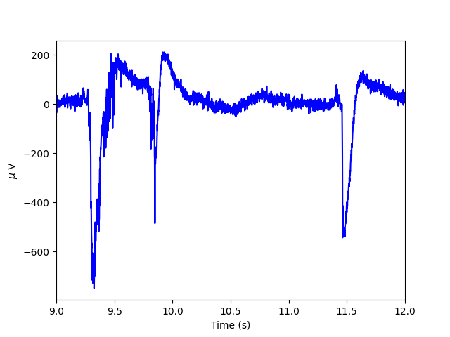
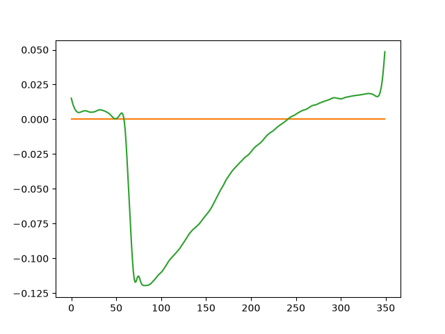

Note
Go to the end to download the full example code.
CSC to learn LFP spiking atoms#
Here, we show how CSC can be used to learn spiking atoms from Local Field Potential (LFP) data [1].
- [1] Hitziger, Sebastian, et al.
Adaptive Waveform Learning: A Framework for Modeling Variability in Neurophysiological Signals. IEEE Transactions on Signal Processing (2017).
First, let us fetch the data (~14 MB)
import os
from mne.datasets import fetch_dataset
url = ('https://github.com/hitziger/AWL/raw/master/Experiments/data/'
'LFP_data_contiguous_1250_Hz.mat')
folder_name = "LFP"
archive_name = "LFP_data_contiguous_1250_Hz.mat"
fname = fetch_dataset(
{"dataset_name": "LFP_data",
"url": url,
"archive_name": archive_name,
"folder_name": folder_name,
"hash": None
},
path=None,
force_update=False
)
fname = os.path.join(fname, archive_name)
Using default location ~/mne_data for LFP_data...
Creating /github/home/mne_data
Fetching 1 file for the LFP_data dataset ...
Downloading file 'LFP_data_contiguous_1250_Hz.mat' from 'https://github.com/hitziger/AWL/raw/master/Experiments/data/LFP_data_contiguous_1250_Hz.mat' to '/github/home/mne_data/LFP'.
0%| | 0.00/14.4M [00:00<?, ?B/s]
46%|████████████████▉ | 6.61M/14.4M [00:00<00:00, 66.1MB/s]
96%|███████████████████████████████████▋ | 13.9M/14.4M [00:00<00:00, 70.1MB/s]
0%| | 0.00/14.4M [00:00<?, ?B/s]
100%|█████████████████████████████████████| 14.4M/14.4M [00:00<00:00, 76.6GB/s]
Download complete in 00s (13.8 MB)
It is a mat file, so we use scipy to load it
And now let us look at the data

(9.0, 12.0)
and filter it using a convenient function from MNE. This will remove low frequency drifts, but we keep the high frequencies
from mne.filter import filter_data
X = filter_data(
X.astype(np.float64), sfreq, l_freq=1, h_freq=None, fir_design='firwin')
Setting up high-pass filter at 1 Hz
FIR filter parameters
---------------------
Designing a one-pass, zero-phase, non-causal highpass filter:
- Windowed time-domain design (firwin) method
- Hamming window with 0.0194 passband ripple and 53 dB stopband attenuation
- Lower passband edge: 1.00
- Lower transition bandwidth: 1.00 Hz (-6 dB cutoff frequency: 0.50 Hz)
- Filter length: 4125 samples (3.300 s)
Now, we define the parameters of our model.
Let’s stick to one random state for now, but if you want to learn how to select the random state, consult this example.
random_state = 10
Now, we epoch the trials
We remove the mean and scale to unit variance.
The convolutions can result in edge artifacts at the edges of the trials. Therefore, we discount the contributions from the edges by windowing the trials.
Of course, in a data-limited setting we want to use as much of the data as possible. If this is the case, you can set overlap to non-zero (for example half the epoch length).
Now, we run regular CSC since the trials are not too noisy
Coordinate descent loop 0 / 60 [n_jobs=1]
[seed 10] Objective (z_hat) : 51134.32096508
Using method dual for projection
[seed 10] Objective (d) 45299.80903125
Coordinate descent loop 1 / 60 [n_jobs=1]
[seed 10] Objective (z_hat) : 26399.47853871
Using method dual for projection
[seed 10] Objective (d) 25948.80915409
Coordinate descent loop 2 / 60 [n_jobs=1]
[seed 10] Objective (z_hat) : 23777.89064427
Using method dual for projection
[seed 10] Objective (d) 23704.90593344
Coordinate descent loop 3 / 60 [n_jobs=1]
[seed 10] Objective (z_hat) : 22233.60227587
Using method dual for projection
[seed 10] Objective (d) 22221.01870097
Coordinate descent loop 4 / 60 [n_jobs=1]
[seed 10] Objective (z_hat) : 21202.43876006
Using method dual for projection
[seed 10] Objective (d) 21169.49202496
Coordinate descent loop 5 / 60 [n_jobs=1]
[seed 10] Objective (z_hat) : 20579.63611160
Using method dual for projection
[seed 10] Objective (d) 20618.98107838
Coordinate descent loop 6 / 60 [n_jobs=1]
[seed 10] Objective (z_hat) : 20283.55110757
Using method dual for projection
[seed 10] Objective (d) 20210.75292119
Coordinate descent loop 7 / 60 [n_jobs=1]
[seed 10] Objective (z_hat) : 19971.53116238
Using method dual for projection
[seed 10] Objective (d) 19970.52325693
Coordinate descent loop 8 / 60 [n_jobs=1]
[seed 10] Objective (z_hat) : 19708.44554814
Using method dual for projection
[seed 10] Objective (d) 19691.20196937
Coordinate descent loop 9 / 60 [n_jobs=1]
[seed 10] Objective (z_hat) : 19462.43966049
Using method dual for projection
[seed 10] Objective (d) 19467.01239142
Coordinate descent loop 10 / 60 [n_jobs=1]
[seed 10] Objective (z_hat) : 19233.45092821
Using method dual for projection
[seed 10] Objective (d) 19214.12766228
Coordinate descent loop 11 / 60 [n_jobs=1]
[seed 10] Objective (z_hat) : 19085.64469638
Using method dual for projection
[seed 10] Objective (d) 19084.13170902
Coordinate descent loop 12 / 60 [n_jobs=1]
[seed 10] Objective (z_hat) : 18945.61954180
Using method dual for projection
[seed 10] Objective (d) 18980.31578131
Coordinate descent loop 13 / 60 [n_jobs=1]
[seed 10] Objective (z_hat) : 18876.43985522
Using method dual for projection
[seed 10] Objective (d) 18836.38353365
Coordinate descent loop 14 / 60 [n_jobs=1]
[seed 10] Objective (z_hat) : 18720.74584344
Using method dual for projection
[seed 10] Objective (d) 18721.54845149
Coordinate descent loop 15 / 60 [n_jobs=1]
[seed 10] Objective (z_hat) : 18623.64002131
Using method dual for projection
[seed 10] Objective (d) 18621.18904483
Coordinate descent loop 16 / 60 [n_jobs=1]
[seed 10] Objective (z_hat) : 18547.81611676
Using method dual for projection
[seed 10] Objective (d) 18545.24281148
Coordinate descent loop 17 / 60 [n_jobs=1]
[seed 10] Objective (z_hat) : 18471.88752075
Using method dual for projection
[seed 10] Objective (d) 18470.42055101
Coordinate descent loop 18 / 60 [n_jobs=1]
[seed 10] Objective (z_hat) : 18393.84202337
Using method dual for projection
[seed 10] Objective (d) 18391.78226334
Coordinate descent loop 19 / 60 [n_jobs=1]
[seed 10] Objective (z_hat) : 18331.73169083
Using method dual for projection
[seed 10] Objective (d) 18328.84451726
Coordinate descent loop 20 / 60 [n_jobs=1]
[seed 10] Objective (z_hat) : 18274.15271778
Using method dual for projection
[seed 10] Objective (d) 18297.40702016
Coordinate descent loop 21 / 60 [n_jobs=1]
[seed 10] Objective (z_hat) : 18257.44912769
Using method dual for projection
[seed 10] Objective (d) 18276.17808995
Coordinate descent loop 22 / 60 [n_jobs=1]
[seed 10] Objective (z_hat) : 18243.49274454
Using method dual for projection
[seed 10] Objective (d) 18261.00618827
Coordinate descent loop 23 / 60 [n_jobs=1]
[seed 10] Objective (z_hat) : 18234.36110427
Using method dual for projection
[seed 10] Objective (d) 18208.94505672
Coordinate descent loop 24 / 60 [n_jobs=1]
[seed 10] Objective (z_hat) : 18179.04646107
Using method dual for projection
[seed 10] Objective (d) 18179.60670479
Coordinate descent loop 25 / 60 [n_jobs=1]
[seed 10] Objective (z_hat) : 18156.84098663
Using method dual for projection
[seed 10] Objective (d) 18166.58627498
Coordinate descent loop 26 / 60 [n_jobs=1]
[seed 10] Objective (z_hat) : 18145.85002304
Using method dual for projection
[seed 10] Objective (d) 18152.93057060
Coordinate descent loop 27 / 60 [n_jobs=1]
[seed 10] Objective (z_hat) : 18131.29820961
Using method dual for projection
[seed 10] Objective (d) 18131.16932189
Coordinate descent loop 28 / 60 [n_jobs=1]
[seed 10] Objective (z_hat) : 18119.63496228
Using method dual for projection
[seed 10] Objective (d) 18111.53150795
Coordinate descent loop 29 / 60 [n_jobs=1]
[seed 10] Objective (z_hat) : 18095.94337378
Using method dual for projection
[seed 10] Objective (d) 18106.50707362
Coordinate descent loop 30 / 60 [n_jobs=1]
[seed 10] Objective (z_hat) : 18098.05239661
Using method dual for projection
[seed 10] Objective (d) 18097.82991020
Coordinate descent loop 31 / 60 [n_jobs=1]
[seed 10] Objective (z_hat) : 18084.15733281
Using method dual for projection
[seed 10] Objective (d) 18025.10057645
Coordinate descent loop 32 / 60 [n_jobs=1]
[seed 10] Objective (z_hat) : 18015.48731605
Using method dual for projection
[seed 10] Objective (d) 18015.15574800
Coordinate descent loop 33 / 60 [n_jobs=1]
[seed 10] Objective (z_hat) : 18009.09808771
Using method dual for projection
[seed 10] Objective (d) 18010.63889989
Coordinate descent loop 34 / 60 [n_jobs=1]
[seed 10] Objective (z_hat) : 18004.88799120
Using method dual for projection
[seed 10] Objective (d) 18058.43303552
Coordinate descent loop 35 / 60 [n_jobs=1]
[seed 10] Objective (z_hat) : 18049.18833230
Using method dual for projection
[seed 10] Objective (d) 17997.43395687
Coordinate descent loop 36 / 60 [n_jobs=1]
[seed 10] Objective (z_hat) : 17990.54846407
Using method dual for projection
[seed 10] Objective (d) 17990.87720134
Coordinate descent loop 37 / 60 [n_jobs=1]
[seed 10] Objective (z_hat) : 17985.96104076
Using method dual for projection
[seed 10] Objective (d) 17988.72474585
Coordinate descent loop 38 / 60 [n_jobs=1]
[seed 10] Objective (z_hat) : 17984.75059698
Using method dual for projection
[seed 10] Objective (d) 18049.42009731
Coordinate descent loop 39 / 60 [n_jobs=1]
[seed 10] Objective (z_hat) : 18046.54419197
Using method dual for projection
[seed 10] Objective (d) 17984.35870034
Coordinate descent loop 40 / 60 [n_jobs=1]
[seed 10] Objective (z_hat) : 17980.96906752
Using method dual for projection
[seed 10] Objective (d) 17980.80697890
Coordinate descent loop 41 / 60 [n_jobs=1]
[seed 10] Objective (z_hat) : 17972.69407403
Using method dual for projection
[seed 10] Objective (d) 17972.04105938
Coordinate descent loop 42 / 60 [n_jobs=1]
[seed 10] Objective (z_hat) : 17966.98587455
Using method dual for projection
[seed 10] Objective (d) 17966.83088839
Coordinate descent loop 43 / 60 [n_jobs=1]
[seed 10] Objective (z_hat) : 17962.43975487
Using method dual for projection
[seed 10] Objective (d) 17977.54092686
Coordinate descent loop 44 / 60 [n_jobs=1]
[seed 10] Objective (z_hat) : 17975.04273241
Using method dual for projection
[seed 10] Objective (d) 17966.09235983
Coordinate descent loop 45 / 60 [n_jobs=1]
[seed 10] Objective (z_hat) : 17963.69171965
Using method dual for projection
[seed 10] Objective (d) 17978.87790191
Coordinate descent loop 46 / 60 [n_jobs=1]
[seed 10] Objective (z_hat) : 17976.73152210
Using method dual for projection
[seed 10] Objective (d) 17972.60504337
Coordinate descent loop 47 / 60 [n_jobs=1]
[seed 10] Objective (z_hat) : 17970.60607032
Using method dual for projection
[seed 10] Objective (d) 17972.20845819
Coordinate descent loop 48 / 60 [n_jobs=1]
[seed 10] Objective (z_hat) : 17970.10862554
Using method dual for projection
[seed 10] Objective (d) 17963.32070008
Coordinate descent loop 49 / 60 [n_jobs=1]
[seed 10] Objective (z_hat) : 17961.24354013
Using method dual for projection
[seed 10] Objective (d) 17970.11169403
Coordinate descent loop 50 / 60 [n_jobs=1]
[seed 10] Objective (z_hat) : 17966.00909391
Using method dual for projection
[seed 10] Objective (d) 17965.49841997
Coordinate descent loop 51 / 60 [n_jobs=1]
[seed 10] Objective (z_hat) : 17963.60184111
Using method dual for projection
[seed 10] Objective (d) 17967.90486974
Coordinate descent loop 52 / 60 [n_jobs=1]
[seed 10] Objective (z_hat) : 17966.38353653
Using method dual for projection
[seed 10] Objective (d) 17962.93566670
Coordinate descent loop 53 / 60 [n_jobs=1]
[seed 10] Objective (z_hat) : 17960.37462985
Using method dual for projection
[seed 10] Objective (d) 17958.59714164
Coordinate descent loop 54 / 60 [n_jobs=1]
[seed 10] Objective (z_hat) : 17957.24493534
Using method dual for projection
[seed 10] Objective (d) 17950.79677886
Coordinate descent loop 55 / 60 [n_jobs=1]
[seed 10] Objective (z_hat) : 17949.66178579
Using method dual for projection
[seed 10] Objective (d) 17953.00062751
Coordinate descent loop 56 / 60 [n_jobs=1]
[seed 10] Objective (z_hat) : 17951.98212475
Using method dual for projection
[seed 10] Objective (d) 17956.73542696
Coordinate descent loop 57 / 60 [n_jobs=1]
[seed 10] Objective (z_hat) : 17955.71212288
Using method dual for projection
[seed 10] Objective (d) 17953.19596635
Coordinate descent loop 58 / 60 [n_jobs=1]
[seed 10] Objective (z_hat) : 17952.24531318
Using method dual for projection
[seed 10] Objective (d) 17955.98374890
Coordinate descent loop 59 / 60 [n_jobs=1]
[seed 10] Objective (z_hat) : 17954.52194692
Using method dual for projection
[seed 10] Objective (d) 17949.09277827
Let’s look at the atoms now.

Total running time of the script: (2 minutes 11.136 seconds)